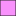

<!doctype html>
<html lang="en">
    <head>
        <meta charset="utf-8">
        <meta http-equiv="X-UA-Compatible" content="IE=edge">
        <meta name="viewport" content="initial-scale=1,user-scalable=no,maximum-scale=1,width=device-width">
        <meta name="mobile-web-app-capable" content="yes">
        <meta name="apple-mobile-web-app-capable" content="yes">
        <link rel="stylesheet" href="css/leaflet.css">
        <link rel="stylesheet" href="css/qgis2web.css"><link rel="stylesheet" href="css/fontawesome-all.min.css">
        <style>
        html, body, #map {
            width: 100%;
            height: 100%;
            padding: 0;
            margin: 0;
        }
        </style>
        <title></title>
    </head>
    <body>
        <div id="map">
        </div>
        <script src="js/qgis2web_expressions.js"></script>
        <script src="js/leaflet.js"></script>
        <script src="js/leaflet.rotatedMarker.js"></script>
        <script src="js/leaflet.pattern.js"></script>
        <script src="js/leaflet-hash.js"></script>
        <script src="js/Autolinker.min.js"></script>
        <script src="js/rbush.min.js"></script>
        <script src="js/labelgun.min.js"></script>
        <script src="js/labels.js"></script>
        <script src="js/leaflet.wms.js"></script>
        <script src="data/PRG_Polska_4.js"></script>
        <script src="data/PRG_Wojewodztwa_5.js"></script>
        <script src="data/Dziaki_6.js"></script>
        <script src="data/PV_Farms_7.js"></script>
        <script src="data/PV_Farms_point_8.js"></script>
        <script>
        var map = L.map('map', {
            zoomControl:true, maxZoom:28, minZoom:1
        }).fitBounds([[48.583835592170544,9.47336739105511],[55.187393446107734,29.041330261491108]]);
        var hash = new L.Hash(map);
        map.attributionControl.setPrefix('<a href="https://github.com/tomchadwin/qgis2web" target="_blank">qgis2web</a> &middot; <a href="https://leafletjs.com" title="A JS library for interactive maps">Leaflet</a> &middot; <a href="https://qgis.org">QGIS</a>');
        var autolinker = new Autolinker({truncate: {length: 30, location: 'smart'}});
        var bounds_group = new L.featureGroup([]);
        function setBounds() {
        }
        map.createPane('pane_Googlemaps_0');
        map.getPane('pane_Googlemaps_0').style.zIndex = 400;
        var layer_Googlemaps_0 = L.tileLayer('http://mt0.google.com/vt/lyrs=s&hl=en&x={x}&y={y}&z={z}', {
            pane: 'pane_Googlemaps_0',
            opacity: 1.0,
            attribution: '',
            minZoom: 1,
            maxZoom: 28,
            minNativeZoom: 0,
            maxNativeZoom: 18
        });
        layer_Googlemaps_0;
        map.addLayer(layer_Googlemaps_0);
        map.createPane('pane_OpenStreetMap_1');
        map.getPane('pane_OpenStreetMap_1').style.zIndex = 401;
        var layer_OpenStreetMap_1 = L.tileLayer('https://tile.openstreetmap.org/{z}/{x}/{y}.png', {
            pane: 'pane_OpenStreetMap_1',
            opacity: 1.0,
            attribution: '',
            minZoom: 1,
            maxZoom: 28,
            minNativeZoom: 0,
            maxNativeZoom: 19
        });
        layer_OpenStreetMap_1;
        map.addLayer(layer_OpenStreetMap_1);
        map.createPane('pane_Stacjeelektroenergetyczne_2');
        map.getPane('pane_Stacjeelektroenergetyczne_2').style.zIndex = 402;
        var layer_Stacjeelektroenergetyczne_2 = L.WMS.layer("https://mapy.geoportal.gov.pl/wss/ext/PSE", "stacje", {
            pane: 'pane_Stacjeelektroenergetyczne_2',
            format: 'image/png',
            uppercase: true,
            transparent: true,
            continuousWorld : true,
            tiled: true,
            info_format: 'text/html',
            opacity: 1,
            identify: false,
            attribution: '',
        });
        map.createPane('pane_Linienajwyszegonapicia_3');
        map.getPane('pane_Linienajwyszegonapicia_3').style.zIndex = 403;
        var layer_Linienajwyszegonapicia_3 = L.WMS.layer("https://mapy.geoportal.gov.pl/wss/ext/PSE", "linie", {
            pane: 'pane_Linienajwyszegonapicia_3',
            format: 'image/png',
            uppercase: true,
            transparent: true,
            continuousWorld : true,
            tiled: true,
            info_format: 'text/html',
            opacity: 1,
            identify: false,
            attribution: '',
        });
        function pop_PRG_Polska_4(feature, layer) {
        }

        function style_PRG_Polska_4_0() {
            return {
                pane: 'pane_PRG_Polska_4',
                opacity: 1,
                color: 'rgba(35,35,35,1.0)',
                dashArray: '',
                lineCap: 'butt',
                lineJoin: 'miter',
                weight: 1.0, 
                fillOpacity: 0,
                interactive: true,
            }
        }
        map.createPane('pane_PRG_Polska_4');
        map.getPane('pane_PRG_Polska_4').style.zIndex = 404;
        map.getPane('pane_PRG_Polska_4').style['mix-blend-mode'] = 'normal';
        var layer_PRG_Polska_4 = new L.geoJson(json_PRG_Polska_4, {
            attribution: '',
            interactive: true,
            dataVar: 'json_PRG_Polska_4',
            layerName: 'layer_PRG_Polska_4',
            pane: 'pane_PRG_Polska_4',
            onEachFeature: pop_PRG_Polska_4,
            style: style_PRG_Polska_4_0,
        });
        bounds_group.addLayer(layer_PRG_Polska_4);
        map.addLayer(layer_PRG_Polska_4);
        function pop_PRG_Wojewodztwa_5(feature, layer) {
        }

        function style_PRG_Wojewodztwa_5_0() {
            return {
                pane: 'pane_PRG_Wojewodztwa_5',
                opacity: 1,
                color: 'rgba(35,35,35,1.0)',
                dashArray: '',
                lineCap: 'butt',
                lineJoin: 'miter',
                weight: 1.0, 
                fillOpacity: 0,
                interactive: true,
            }
        }
        map.createPane('pane_PRG_Wojewodztwa_5');
        map.getPane('pane_PRG_Wojewodztwa_5').style.zIndex = 405;
        map.getPane('pane_PRG_Wojewodztwa_5').style['mix-blend-mode'] = 'normal';
        var layer_PRG_Wojewodztwa_5 = new L.geoJson(json_PRG_Wojewodztwa_5, {
            attribution: '',
            interactive: true,
            dataVar: 'json_PRG_Wojewodztwa_5',
            layerName: 'layer_PRG_Wojewodztwa_5',
            pane: 'pane_PRG_Wojewodztwa_5',
            onEachFeature: pop_PRG_Wojewodztwa_5,
            style: style_PRG_Wojewodztwa_5_0,
        });
        bounds_group.addLayer(layer_PRG_Wojewodztwa_5);
        map.addLayer(layer_PRG_Wojewodztwa_5);
        function pop_Dziaki_6(feature, layer) {
        }

        function style_Dziaki_6_0() {
            return {
                pane: 'pane_Dziaki_6',
                opacity: 1,
                color: 'rgba(255,35,35,1.0)',
                dashArray: '',
                lineCap: 'butt',
                lineJoin: 'miter',
                weight: 2.0, 
                fillOpacity: 0,
                interactive: true,
            }
        }
        map.createPane('pane_Dziaki_6');
        map.getPane('pane_Dziaki_6').style.zIndex = 406;
        map.getPane('pane_Dziaki_6').style['mix-blend-mode'] = 'normal';
        var layer_Dziaki_6 = new L.geoJson(json_Dziaki_6, {
            attribution: '',
            interactive: true,
            dataVar: 'json_Dziaki_6',
            layerName: 'layer_Dziaki_6',
            pane: 'pane_Dziaki_6',
            onEachFeature: pop_Dziaki_6,
            style: style_Dziaki_6_0,
        });
        bounds_group.addLayer(layer_Dziaki_6);
        map.addLayer(layer_Dziaki_6);
        function pop_PV_Farms_7(feature, layer) {
        }

        function style_PV_Farms_7_0() {
            return {
                pane: 'pane_PV_Farms_7',
                opacity: 1,
                color: 'rgba(35,35,35,1.0)',
                dashArray: '',
                lineCap: 'butt',
                lineJoin: 'miter',
                weight: 1.0, 
                fill: true,
                fillOpacity: 1,
                fillColor: 'rgba(240,0,248,0.43137254901960786)',
                interactive: true,
            }
        }
        map.createPane('pane_PV_Farms_7');
        map.getPane('pane_PV_Farms_7').style.zIndex = 407;
        map.getPane('pane_PV_Farms_7').style['mix-blend-mode'] = 'normal';
        var layer_PV_Farms_7 = new L.geoJson(json_PV_Farms_7, {
            attribution: '',
            interactive: true,
            dataVar: 'json_PV_Farms_7',
            layerName: 'layer_PV_Farms_7',
            pane: 'pane_PV_Farms_7',
            onEachFeature: pop_PV_Farms_7,
            style: style_PV_Farms_7_0,
        });
        bounds_group.addLayer(layer_PV_Farms_7);
        map.addLayer(layer_PV_Farms_7);
        function pop_PV_Farms_point_8(feature, layer) {
        }

        function style_PV_Farms_point_8_0() {
            return {
                pane: 'pane_PV_Farms_point_8',
        rotationAngle: 0.0,
        rotationOrigin: 'center center',
        icon: L.icon({
            iconUrl: 'markers/red-marker.svg',
            iconSize: [30.4, 30.4]
        }),
                interactive: true,
            }
        }
        map.createPane('pane_PV_Farms_point_8');
        map.getPane('pane_PV_Farms_point_8').style.zIndex = 408;
        map.getPane('pane_PV_Farms_point_8').style['mix-blend-mode'] = 'normal';
        var layer_PV_Farms_point_8 = new L.geoJson(json_PV_Farms_point_8, {
            attribution: '',
            interactive: true,
            dataVar: 'json_PV_Farms_point_8',
            layerName: 'layer_PV_Farms_point_8',
            pane: 'pane_PV_Farms_point_8',
            onEachFeature: pop_PV_Farms_point_8,
            pointToLayer: function (feature, latlng) {
                var context = {
                    feature: feature,
                    variables: {}
                };
                return L.marker(latlng, style_PV_Farms_point_8_0(feature));
            },
        });
        bounds_group.addLayer(layer_PV_Farms_point_8);
        map.addLayer(layer_PV_Farms_point_8);
        map.on("zoomend", function(e) {
            if (map.getZoom() <= 19 && map.getZoom() >= 12) {
                map.addLayer(layer_Dziaki_6);
            } else if (map.getZoom() > 19 || map.getZoom() < 12) {
                map.removeLayer(layer_Dziaki_6);
            }
            if (map.getZoom() <= 14 && map.getZoom() >= 2) {
                map.addLayer(layer_PV_Farms_point_8);
            } else if (map.getZoom() > 14 || map.getZoom() < 2) {
                map.removeLayer(layer_PV_Farms_point_8);
            }
        });
            if (map.getZoom() <= 19 && map.getZoom() >= 12) {
                map.addLayer(layer_Dziaki_6);
            } else if (map.getZoom() > 19 || map.getZoom() < 12) {
                map.removeLayer(layer_Dziaki_6);
            }
            if (map.getZoom() <= 14 && map.getZoom() >= 2) {
                map.addLayer(layer_PV_Farms_point_8);
            } else if (map.getZoom() > 14 || map.getZoom() < 2) {
                map.removeLayer(layer_PV_Farms_point_8);
            }
        var baseMaps = {};
        L.control.layers(baseMaps,{' PV_Farms_point': layer_PV_Farms_point_8,' PV_Farms': layer_PV_Farms_7,' Działki': layer_Dziaki_6,' PRG_Wojewodztwa': layer_PRG_Wojewodztwa_5,' PRG_Polska': layer_PRG_Polska_4,"Linie najwyższego napięcia": layer_Linienajwyszegonapicia_3,"Stacje elektroenergetyczne": layer_Stacjeelektroenergetyczne_2,"OpenStreetMap": layer_OpenStreetMap_1,"Google maps": layer_Googlemaps_0,}).addTo(map);
        setBounds();
        var i = 0;
        layer_Dziaki_6.eachLayer(function(layer) {
            var context = {
                feature: layer.feature,
                variables: {}
            };
            layer.bindTooltip((layer.feature.properties['nr_dzialki'] !== null?String('<div style="color: #ffffff; font-size: 10pt; font-family: \'Arial\', sans-serif;">' + layer.feature.properties['nr_dzialki']) + '</div>':''), {permanent: true, offset: [-0, -16], className: 'css_Dziaki_6'});
            labels.push(layer);
            totalMarkers += 1;
              layer.added = true;
              addLabel(layer, i);
              i++;
        });
        var i = 0;
        layer_PV_Farms_point_8.eachLayer(function(layer) {
            var context = {
                feature: layer.feature,
                variables: {}
            };
            layer.bindTooltip((layer.feature.properties['Projekt'] !== null?String('<div style="color: #ffffff; font-size: 8pt; font-family: \'Arial\', sans-serif;">' + layer.feature.properties['Projekt']) + '</div>':''), {permanent: true, offset: [-0, -16], className: 'css_PV_Farms_point_8'});
            labels.push(layer);
            totalMarkers += 1;
              layer.added = true;
              addLabel(layer, i);
              i++;
        });
        resetLabels([layer_Dziaki_6,layer_PV_Farms_point_8]);
        map.on("zoomend", function(){
            resetLabels([layer_Dziaki_6,layer_PV_Farms_point_8]);
        });
        map.on("layeradd", function(){
            resetLabels([layer_Dziaki_6,layer_PV_Farms_point_8]);
        });
        map.on("layerremove", function(){
            resetLabels([layer_Dziaki_6,layer_PV_Farms_point_8]);
        });
        </script>
    </body>
</html>
